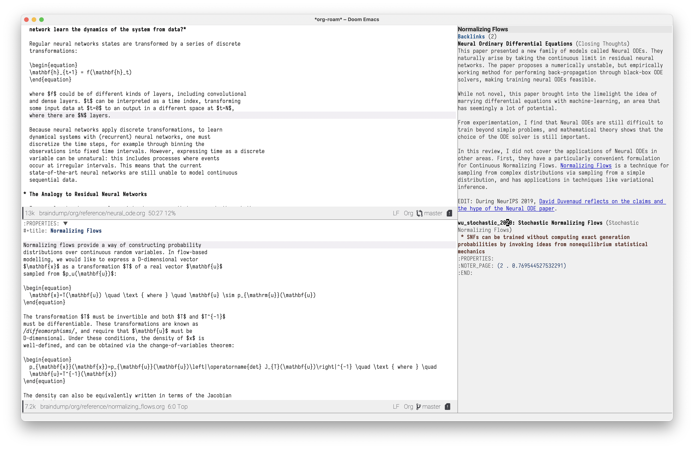
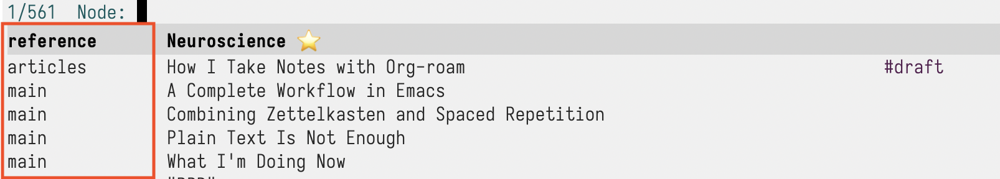
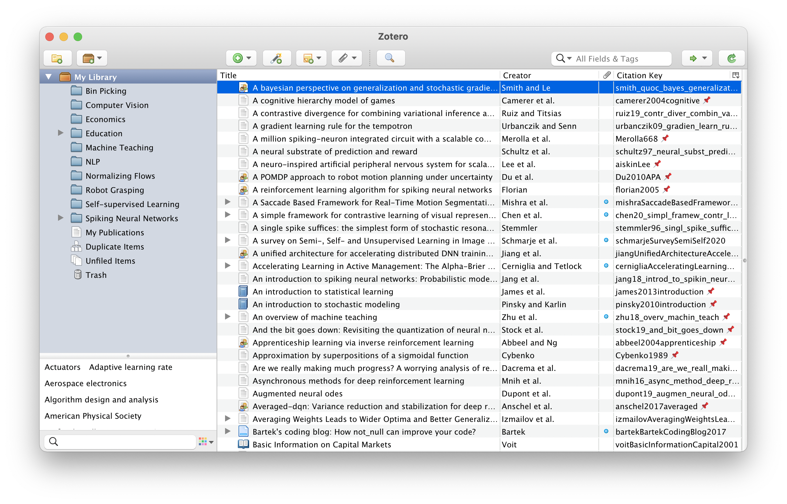

How I Take Notes with Org-roam

Preface
This is an internal guide explaining how I take notes in Org-mode and Org-roam. I write this in hopes that this will provide insight into my note-taking process. Please understand that note-taking is a personal practice and what works best for me may not work for you.
Let me first introduce myself. Professionally I’m a Machine Learning Engineer at Abnormal Security. I try to keep up with recent developments in tech, and occasionally read technical papers relevant to my field or area of work. As a (serious) hobby I play the guitar, and I’m also trying to integrate portions of my music study into my Zettelkasten. I’ve been using Emacs and Org-mode to take notes for several years, and the note-taking process I am now documenting has evolved organically over the years, and is always subject to minute optimizations. Org-roam is a byproduct of this process, which I’ve made available for public consumption.
I hope that while reading this document you keep close at heart the guiding principles and purposes of note-taking, in the context of your own work and life. If you have specific questions/doubts along the way, you can create a GitHub issue here.
The Note-taking Mindset
I take notes because I want these notes to to serve me later on in my life. This is system is meant to be an extension of my physical brain: an evolving cache of information that I will at some point want to recall.
This has several implications. This means that:
- I want the notes in my system to contain only what’s relevant to me. This changes over time: I need a way to delete/add notes freely without disruption.
- All fleeting notes I take must be regularly processed: turned into permanent notes, or discarded entirely when no longer needed
- Permanent notes should resurface when relevant to the current topic at hand
The first point has several implications. Notes must be well-factored and self-contained, such that deleting them will not result in a sudden gap in context.
These are some behaviour I observed in the wild that don’t quite gel with me:
- taking too much notes
- especially prevelant is the copying of text wholesale from sources. Notes should be a distillation of what you’ve read: rewriting ideas and concepts in your own words helps reinforce understanding.
- taking notes about everything
- To maintain a high signal-to-noise ratio, we need to be picky about what is added into your Zettelkasten.
- having an overly-complex note-taking workflow
- Automation becomes detrimental to note-taking. The quality of notes is highly correlated with the amount of deliberation for each character you put into your slipbox.
The Slipbox Setup
I keep my workspace simple. I maintain one mega
slip-box: all my notes are kept within
org-roam-directory. True to Luhmann’s
original implementation, within the mega slip-box I keep
two primary slipboxes.
The first slipbox is the reference slipbox. It contains zettels that contain information from various sources I consume (books, articles, papers etc.). Each reference zettel points back to the original source.
The second slipbox, for the lack of a better name, is the main slipbox. It contains my own ideas and concepts, extracted from the material I read. They point back to reference slipbox zettels.
I maintain an additional articles “slipbox”. This is a folder containing articles that are a culmination of my ideas in the main slipbox, as well as references from the reference slipbox. This is an example of one such article.
Finally I have an inbox file, where unprocessed ideas are captured.
Altogether, I have a directory structure that looks like this:
. ├── articles ├── main ├── reference ├── inbox.org └── biblio.bib
This directory structure is reflected in my three capture templates, one for a main zettel, one for a reference zettel, and one for an article.
(setq org-roam-capture-templates '(("m" "main" plain "%?" :if-new (file+head "main/${slug}.org" "#+title: ${title}\n") :immediate-finish t :unnarrowed t) ("r" "reference" plain "%?" :if-new (file+head "reference/${title}.org" "#+title: ${title}\n") :immediate-finish t :unnarrowed t) ("a" "article" plain "%?" :if-new (file+head "articles/${title}.org" "#+title: ${title}\n#+filetags: :article:\n") :immediate-finish t :unnarrowed t)))
I use two separate slipboxes to maintain a strict distinction between an original thought and an idea from an external source. This allows for proper attribution, and also allows us to return to the source to dig further if a particular line of thought is extra intriguing.
It’d of course also be useful to differentiate the different types of zettels at completion time. This used to be a feature in Org-roam v1, which I’d removed. Thankfully, the code is architectured such that you could define your own properties on nodes. In this case, I want to define the “type” of note based on its file path. This is simple enough:
(cl-defmethod org-roam-node-type ((node org-roam-node)) "Return the TYPE of NODE." (condition-case nil (file-name-nondirectory (directory-file-name (file-name-directory (file-relative-name (org-roam-node-file node) org-roam-directory)))) (error "")))
Now, for type to show up in the completion
interface, I just add it to my display template:
(setq org-roam-node-display-template (concat "${type:15} ${title:*} " (propertize "${tags:10}" 'face 'org-tag)))
And now it shows up!

Figure 1: My zettel types now show up in the red box
Zettel Structure
:PROPERTIES: :ID: 575c27d4-7f15-4167-8fa2-d1c5c83b0cad :END: #+title: Example Zettel #+filetags: :some:tags: ...
I keep things simple by keeping my zettels file-based. While Org-mode provides the facilities for using headline hierarchy, I find that it provides little value to my note-taking, and can have an adverse effect on my thinking. It is possible to give ideas and thoughts structure without relying on the Org-mode hierarchy, through index/organizational zettels.
Capturing Thoughts
I capture any thoughts I have that I would want to
process into my slipbox using plain
org-capture:
(setq org-capture-templates ;; other capture templates ("s" "Slipbox" entry (file "braindump/org/inbox.org") "* %?\n")) (defun jethro/org-capture-slipbox () (interactive) (org-capture nil "s"))
You could use org-roam-capture for this,
but I see no point for the added complexity. I bind
jethro/org-capture-slipbox to a key of my
choice. Honestly, I find that I make much less use of this
than a typical academic would: this is because it is not my
business to produce original ideas or thoughts. My
zettelkasten is primarily for me to consume content and
reinforce understanding by forming links to material I have
already ingested.
Creating Zettels
Reference Zettels
I create reference zettels when I’m consuming
material I’ve come across. Each reference zettel
has a corresponding ROAM_REFS key, which
corresponds to the canonical source. They come in two
main forms:
- [cite:key]
- For academic items, I use Org-mode 9.5 citations. These include papers and books, which happen to be my primary source of material.
- https://google.com
- For websites, I use their canonical URL.
Citation Management
I manage my citations with Zotero. I use the
Better
BibTeX plugin to auto-export all my files into a
single biblio.bib file, located at the
root of my org-roam-directory. My
bibliography setup is not complex: in fact, it is
Doom
Emacs’ default
biblio module.

Figure 2: Zotero, a bibliographic management system
What’s crucial for me here the ability to capture any source quickly into Zotero, using the Zotero Web Connectors. For example, if I come across a paper on Arxiv that I want to process, I can use the Zotero Firefox connector to quickly add the citation into Zotero. It will also fetch a copy of the paper for me. I use these offline copies to make annotations on these pdfs while reading, and the pdfs get synced across my different computers by placing my Zotero library within Dropbox. The citations themselves are synced using Zotero’s free online service.
Reference Citation Zettels
For each source, I create one and exactly one zettel. Sometimes this can get unwieldy: one can consider splitting by chapters if really necessary. To create a reference citation zettel, I use a custom function I wrote that picks out a citation key, and creates a note for it:
(defun jethro/org-roam-node-from-cite (keys-entries) (interactive (list (citar-select-ref :multiple nil :rebuild-cache t))) (let ((title (citar--format-entry-no-widths (cdr keys-entries) "${author editor} :: ${title}"))) (org-roam-capture- :templates '(("r" "reference" plain "%?" :if-new (file+head "reference/${citekey}.org" ":PROPERTIES: :ROAM_REFS: [cite:@${citekey}] :END: #+title: ${title}\n") :immediate-finish t :unnarrowed t)) :info (list :citekey (car keys-entries)) :node (org-roam-node-create :title title) :props '(:finalize find-file))))
The full flow is therefore as such:
- Use Zotero Web Connector to add source into
Zotero
- Zotero automatically fetches offline copy of source material, if possible. If not, I will manually fetch it and add it to the Zotero library.
- BetterBibTex automatically updates
biblio.bib, making it available to Emacs. - I call
jethro/org-roam-node-from-cite, select the correct reference, and a new reference zettel is created. - I read the source material using a local program, making multiple passes and annotate along the way. I then jot notes, and find existing zettels in my zettelkasten to link to.
It’s possible to write a function in similar vein for website-based reference zettels, but I didn’t see a need to do so. For these, I key them in manually.
Every Zettel is a Draft until Declared Otherwise
All zettels begin as unrefined notes. To keep my Zettelkasten high-quality, it is important for me to constantly revisit and refine these draft notes. Once I am satisfied with the draft zettels, I can then mark them as complete. This is similar to Andy Matuschak’s concept of evergreen notes.
I mark all of my new zettels with the tag
draft, by doing the following:
(defun jethro/tag-new-node-as-draft () (org-roam-tag-add '("draft"))) (add-hook 'org-roam-capture-new-node-hook #'jethro/tag-new-node-as-draft)
Note: I do not yet have a system for revisiting zettels.
Guiding Principles
Not Everything Needs To Be Done In Emacs
One common complaint about Org-roam is mobile support: it is non-trivial to get Emacs up and running on mobile, and even then adding notes on the fly is not so easy.
There is also a strong desire for Org-roam to develop a solid publishing workflow. There are projects that are work-in-progress, but they all take significant amount of setup. Zettelkastens are not meant for public consumption. Notes should be written for yourself and yourself only. Published materials should be a thoughtful composition of multiple zettels, with a healthy injection of your own summaries.
My initial motivation for publishing my notes was twofold. First, then I’d occasionally point friends to things I mention, but more often than not the zettels I had written were gibberish to them, since they were written for me. Second, I thought it’d be good to be able to review zettels on the go. I find that this was generally suboptimal use of my time.
As an alternative, I am exploring using spaced repetition to deepen my understanding of the zettels I have written.
Further Reading
Congrats on making it here! If you’re interested in delving deeper into the note-taking rabbit hole, you can browse the following links:
Addendum
Choosing Your Citation Package
Org-mode currently has 3 different citation keys: Org-ref v2, Org-ref v3, Org-mode 9.5 native citation keys.
For Org-mode citations, I recommend the wonderful citar package. For Org-ref style citations, you will be using org-ref.
My recommendation is to use one or the other, and not mix both, although you certainly could.
TODO How to Write Good Zettels
This is a really difficult skill, one that I’m still trying to get adept at as well. It’s obviously a lot more nuanced and complex than this, but here’s some guiding principles that I found useful.
Zettels should be Atomic
A large part of content understanding is being able to break things down into simple concepts and linking them together. If your zettels are getting extremely long, it’s a sign that you haven’t yet fully broken down the content in it. A good signal is naming your zettels. If you can come up with a short sentence to summarize the content of your zettel, you should be good.
Zettel titles should be also specific. You shouldn’t run into name clashes on your zettels.
Zettels should be Encapsulated
A zettel should be readable on its own, without surrounding context.
As someone from a tech background, this can be
unintuitive, but it’s okay to repeat
yourself! If you have two notes that are related,
X and Y, it’s okay to
write about how Y is related to
X in X, and how
X is related to Y in
Y. Imagine trying to follow the DRY
(Don’t Repeat Yourself) principle here:
you’ll end up “refactoring” the
X and Y notes by linking them
to a note Z that talks about how
X and Y are related. Then you
can’t read either X or
Y without going to read
Z!
What About Everything Else?
Org-roam ships other features, but here’s why I don’t use them.
Org-roam-protocol
Org-roam-protocol used to be my go-to method for taking notes on content from all sorts of sources, from websites to books. I mean, how convenient to be able to pop up the note for the current source you’re reading!
Here I think too much convenience was a bad thing. Over time I learnt to slow down and not be over-eager in taking notes. Now I consume material in separate passes, kind of like a loose version of the three-pass approach. I skim the material, assessing whether it is worth reading in detail (and taking notes about) in the first place. In a few other passes, I take brief notes or highlight various parts that catch my eye. Finally, I handcraft my notes. Comparatively, I take fewer but more relevant notes.
Org-roam-dailies
I used to keep my scattered thoughts within daily pages within Org-roam, but I find that these often add more noise than signal into what should be a pristine garden. I don’t really need the date information anyway: why should when I noted something down affect whether something is relevant to me now?
So now I’ve simplified and keep my unprocessed thoughts in a single Org file. Journal entries, which are admittedly few and far between, are kept separately.
What about Task Management?
It’s tempting to combine task management (e.g. Getting Things Done (GTD)) with your Zettelkasten. This is the curse of Emacs and Org-mode: it’s just way too powerful and multi-functional, and it’s also the Emacs way to use the same tool for everything.
I ultimately decided to keep the two systems separate, despite using Org-mode for both of them. The primary reason is that these systems are just too different. They operate on different modes of thinking: note-taking and knowledge creation will always require large amounts of brain work. On the other hand, GTD makes task management a simple, effortless process. Having separate systems allows my brain to operate in these different modes as required.
It’s also tempting to leave todos within the
zettels, and use org-agenda to show
what’s left to be processed. I prefered
centralizing todos and tasks elsewhere, keeping my
Zettelkasten clean (see broken
windows theory).
Versions
Here are versions of the relevant software I’m using.
Org: Org mode version 9.6 (9.6-??-0c9b30e @ /Users/jethro/.emacs.d/.local/straight/build-29.0.50/org/) Org-roam: v2.2.0-13-gaafe411